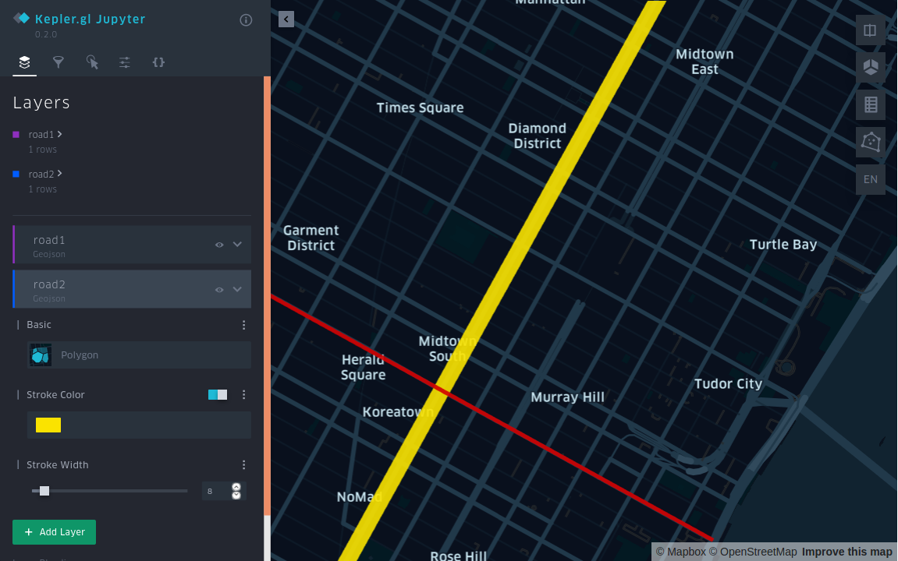

使用 Arctern 分析空间数据¶
完成 Arctern 的安装部署 之后，本文档引导你使用 Arctern 分析帝国大厦附近的道路信息。
安装 Jupyter 和 Kepler.gl¶
在后续步骤中，你需要使用 Jupyter Notebook 运行代码，以及使用 Kepler.gl 进行空间数据可视化。如果你的计算机未安装 Jupyter 和 Kepler.gl，请执行以下命令安装这两个工具：
# 进入 Conda 环境
$ conda activate arctern_env
# 安装 Jupyter 和 Kepler.gl
$ conda install -c conda-forge jupyterlab
$ pip install keplergl
运行 Jupyter Notebook¶
在 Conda 环境中运行 Jupyter Notebook，它将在你的默认浏览器中打开一个页面。
$ jupyter-notebook
点击页面右上角的 New > Python3 以新建一个 Notebook。
运行 Arctern¶
使用 Arctern 分析道路信息¶
注意： 以下操作均在新建的 Notebook 中运行。
导入 arctern、keplergl 以及其他的相关库：
>>> from keplergl import KeplerGl
>>> import pandas as pd
>>> import arctern
以帝国大厦附近的两条道路为分析对象，创建 WKT 格式的 LINESTRING 对象（road1、road2）以表示这两条道路。
>>> # road1 道路两端的经纬度坐标分别是 (-73.996324, 40.753388)、(-73.972088, 40.743215)
>>> # road2 道路两端的经纬度坐标分别是 (-73.989555, 40.741531)、(-73.973952, 40.762962)
>>> road1 = 'LINESTRING (-73.996324 40.753388, -73.972088 40.743215)'
>>> road2 = 'LINESTRING (-73.989555 40.741531, -73.973952 40.762962)'
使用 GeoSeries.intersects 方法检查 road1 与 road2 是否相交。
若返回 True，则相交；
若返回 False，则不相交。
>>> geo1 = arctern.GeoSeries(road1)
>>> geo2 = arctern.GeoSeries(road2)
>>> geo1.intersects(geo2)
0 True
dtype: bool
使用 Kepler.gl 绘制地图¶
使用 Kepler.gl 在地图上绘制 road1 和 road2，观察这两条路是否相交：
>>> KeplerGl(height=600,data={"road1":pd.DataFrame(data={"road1":[road1]}),"road2":pd.DataFrame(data={"raod2":[road2]})})
你还可以点击 Kepler.gl 界面右上角的 > 按钮以展开侧边栏，在其中设置每条路线的颜色和线宽。

使用 Arctern 筛选信息¶
注意： 以下操作均在新建的 Notebook 中运行。
导入 arctern、keplergl 以及其他的相关库：
>>> from keplergl import KeplerGl
>>> import pandas as pd
>>> from arctern import GeoDataFrame
创建一个 GeoDataFrame 对象 df以表示城市信息：
>>> data = {
>>> 'City': ['BeiJing', 'ShangHai', 'Tokyo', 'Seoul'],
>>> 'Country': ['China', 'China', 'Japan', 'Korea'],
>>> 'Coordinates': ['POINT(116.24 39.55)', 'POINT(121.29 31.14)',
>>> 'POINT(139.49 35.40)', 'POINT(126.58 37.33)']
>>> }
>>> df = GeoDataFrame(data, geometries=["Coordinates"], crs="EPSG:4326")
筛选出 Country == "China" 的城市信息：
>>> in_china = pd.Series([df.Country[idx] == "China" for idx in range (0, len(df))])
>>> df_in_china = df[in_china]
>>> df_in_china
City Country Coordinates
0 BeiJing China POINT (116.24 39.55)
1 ShangHai China POINT (121.29 31.14)
使用 Kepler.Gl 绘制地图¶
使用 Kepler.Gl 在地图上标示出 Beijing 和 ShangHai 两个城市：
>>> KeplerGl(height=600, data={"citys":pd.DataFrame(rst.Coordinates.to_wkt())})